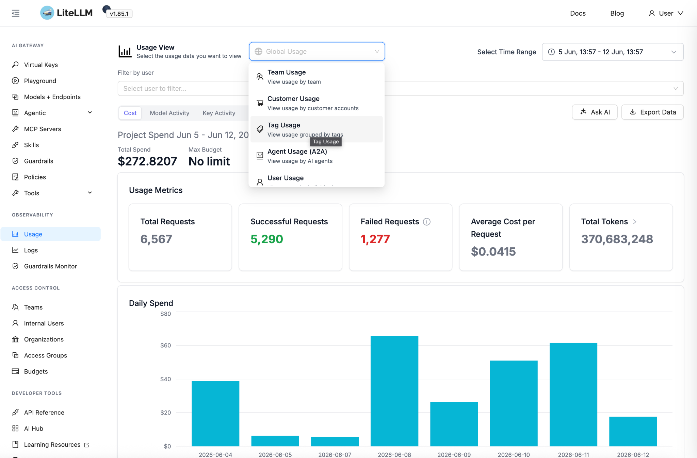

Wie wir KI für Sie einsetzen — und warum wir sie auf einer eigenen, sicheren
Plattform betreiben.
EU-only
Datenverarbeitung
8+
Top-Tier Modelle
100 %
Projektbezogene Kosten
StandJuni 2026
HerausgeberOPEN · KI-Team
VertraulichkeitKunden-Information
AI.OPEN für unsere KundenEinleitung & Inhalt
01Wie wir mit KI arbeiten
Künstliche Intelligenz ist bei OPEN kein Nebenprojekt — sie ist eine zentrale,
gruppen-weit verfügbare Infrastruktur, die wir konsequent datenschutzkonform,
transparent und qualitätsgesichert betreiben.
Statt einzelne Mitarbeitende mit öffentlichen KI-Diensten arbeiten zu lassen, haben wir
mit AI.OPEN eine eigene Plattform aufgebaut: eine sichere Middleware
zwischen unseren Kolleginnen, Kollegen und Anwendungen auf der einen Seite — und den
aktuellsten KI-Modellen in einer EU-Cloud auf der anderen Seite.
Eine Anfrage, die über AI.OPEN läuft, verlässt zu keinem Zeitpunkt die EU — und keine
Ihrer Daten werden zum Training von Modellen verwendet.
Inhalt
01
Wie wir mit KI arbeiten
Was AI.OPEN ist — kurz erklärt
S. 02
02
Ihre Vorteile auf einen Blick
Drei Kernversprechen für unsere Kunden
S. 03
03
Datenschutz & Architektur
Wie wir Ihre Daten schützen — visualisiert
S. 04
04
Die besten KI-Modelle
Multi-Provider-Strategie statt Lock-in
S. 05
05
Unsere Anwendungsfälle
Wofür wir KI heute schon einsetzen
S. 06
06
Transparente Kostenzuordnung
Jeder Token wird Ihrem Projekt zugeordnet
S. 07
07
Gruppen-weite Governance
Wie wir KI bei OPEN skalieren
S. 08
08
Roadmap & Vision
Was als Nächstes auf der Plattform kommt
S. 09
09
Kontakt & Gespräch
Lassen Sie uns sprechen
S. 10
AI.OPEN für unsere KundenIhre Vorteile
02Ihre Vorteile auf einen Blick
Mit AI.OPEN profitieren Sie als unser Kunde von drei Kernversprechen — Datenschutz,
Modellqualität und Kostentransparenz — ohne dass Sie sich selbst um Anbieter, Verträge
oder Compliance kümmern müssen.
🛡️
Datenschutz auf höchstem Niveau
Alle Anfragen werden ausschließlich in der EU verarbeitet
(Google Cloud, EU-Region). Keine Ihrer Daten verlassen die EU, kein Anbieter
nutzt Ihre Inhalte für Modell-Training.
⚡
Immer das beste Modell
Wir setzen auf eine Multi-Provider-Strategie — Claude, Gemini,
Qwen und mehr. Wir wählen pro Use Case das passende Modell und sind nie an
einen einzelnen Anbieter gebunden.
📊
Projektbezogene Transparenz
Jeder einzelne KI-Aufruf wird automatisch Ihrem Projekt
zugeordnet. Sie sehen exakt, welche Kosten in welchem Engagement entstanden
sind — keine Pauschalen, keine Schätzungen.
Warum eine eigene Plattform?
Wir hätten KI auch einfach bei einzelnen öffentlichen Anbietern „einkaufen" können.
Das hätte aber drei Probleme bedeutet:
Datenschutz wäre nicht durchgängig garantiert — viele öffentliche
Dienste sitzen in den USA und nutzen Eingaben für Training.
Kostenzuordnung wäre intransparent — keine saubere Trennung pro
Kunde, pro Projekt, pro Use Case.
Wir wären an einen Anbieter gebunden — KI entwickelt sich rasant,
heute beste Modelle sind morgen veraltet.
AI.OPEN löst alle drei Probleme strukturell.
AI.OPEN für unsere KundenDatenschutz & Architektur
03Datenschutz & Architektur
AI.OPEN ist als sichere Middleware aufgebaut: jede KI-Anfrage — egal
aus welchem Tool — läuft über unser zentrales Gateway, das sie mit den richtigen
Sicherheits-, Compliance- und Routing-Regeln versieht, bevor sie die Sprachmodelle
in der EU-Cloud erreicht.
Architektur — Ihre Anfrage bleibt durchgängig in der EU. Nichts verlässt jemals die europäische Cloud-Region.
Was das für Sie bedeutet
EU-only Datenverarbeitung — alle Anfragen werden in europäischen Rechenzentren von Google Cloud verarbeitet.
Kein Modell-Training auf Ihren Daten — vertraglich zugesicherte „Enterprise"-Verträge mit allen Modellanbietern.
Vollständiges Audit-Logging — wir können jede Anfrage nachverfolgen und die Verarbeitung belegen.
DSGVO-konforme Authentifizierung über das interne OPEN Identity-Management.
AI.OPEN für unsere KundenDie besten KI-Modelle
04Die besten KI-Modelle — ohne Lock-in
Wir setzen bewusst auf eine Multi-Provider-Strategie: über AI.OPEN
haben wir Zugriff auf die führenden Sprachmodelle der Welt — und können für jeden
Use Case das passende Modell wählen.
Modell
Stärken
Modalitäten
Anbieter
claude-opus-4-7
Komplexe Analysen, lange Kontexte
visionpdftools
Google
claude-sonnet-4-6
Ausgewogen, sehr vielseitig
visionpdftools
Google
claude-haiku-4-5
Schnelle, günstige Routine-Tasks
visionpdftools
Google
gemini-2.5-pro
Sehr lange Dokumente, multimodal
visionpdfaudiotools
Google
gemini-3.5-flash
State-of-the-Art, multimodal
visionpdfaudiotools
Google
qwen3-235b
Open-Source-Alternative, tool use
tools
Google
Auswahl Stand Juni 2026. Unsere Modellauswahl wird vom internen KI-Team kontinuierlich
aktualisiert, sobald neue State-of-the-Art-Modelle in der EU-Region verfügbar werden.
Was bedeutet das für Sie?
∞
Bis zu 1 Mio Tokens Kontext
Bild
Vision & PDF-Verarbeitung
Tools
Direkte System-Integrationen
Audio
Transkription & Analyse
Sie müssen sich nicht für einen Anbieter entscheiden — wir wählen pro Use Case das
Modell mit dem besten Verhältnis aus Qualität, Geschwindigkeit und Kosten.
AI.OPEN für unsere KundenUnsere Anwendungsfälle
05Unsere Anwendungsfälle
AI.OPEN ist kein abstraktes Werkzeug — die Plattform trägt heute schon konkrete
Anwendungen, mit denen wir für Sie arbeiten.
Im Einsatz
OPEN PULSE
Ein KI-Agent für die strukturierte Kundenanalyse — kombiniert
Sprachmodell mit unseren Wissensquellen und liefert reproduzierbare,
dimensionsbasierte Analysen statt ad-hoc Bauchgefühl.
Im Einsatz
Coding-Assistenten
Unsere Developer arbeiten direkt aus ihrer IDE heraus mit KI — schnellere
Entwicklung, höhere Code-Qualität. Alle Kosten sauber Ihrem Projekt zugeordnet,
sobald wir für Sie entwickeln.
Im Einsatz
Custom Agents
Fachlich abgestimmte Agents für wiederkehrende Aufgaben (Analyse, Reporting,
Recherche). Jeder Agent ist eine Kombination aus Modell, Wissensquellen und
Tool-Integration — gebaut für einen klaren Zweck.
Im Einsatz
Prompts & Skills Library
Bewährte Prompts und wiederverwendbare Skills werden zentral verwaltet,
versioniert und team-übergreifend genutzt — so verlieren wir keine Erfahrungen
und liefern konsistente Qualität.
Demnächst auf der Plattform
01Ausschreibungs-AgentKI-Unterstützung im Ausschreibungsprozess
02Projekt-Management-AgentStrukturierte Begleitung im Projektalltag
03Marketing-Support-AgentEffiziente Content- und Kampagnen-Erstellung
Idee für Ihren Use Case?
Wenn Sie einen spezifischen Anwendungsfall sehen, bei dem KI für Ihre Organisation
Mehrwert schaffen würde — wir entwickeln gemeinsam mit Ihnen den passenden Agent.
Sprechen Sie uns an.
AI.OPEN für unsere KundenTransparente Kostenzuordnung
06Transparente Kostenzuordnung
Jede einzelne KI-Anfrage wird im Moment der Verarbeitung mit den passenden Tags
versehen — Projekt, Team, Benutzer, Rolle. Daraus entsteht eine
Kostenzuordnung, die so präzise ist wie eine klassische Stundenabrechnung.
🎯
Pro Projekt zugeordnet
Jede KI-Anfrage trägt das Tag des Kunden- und Projekt-Kontexts, in dem sie
ausgelöst wurde — automatisch, ohne dass jemand manuell zuordnen muss.
📈
Audit-fähiges Reporting
Wir können Ihnen auf Wunsch eine detaillierte Aufstellung der für Ihr Projekt
angefallenen KI-Kosten zur Verfügung stellen — pro Tag, pro Use Case, pro Modell.

Internes Reporting-Dashboard — Token-Verbrauch, Erfolgsquote und Tagesverteilung pro Projekt.
Sie zahlen für KI nur das, was tatsächlich in Ihrem Projekt verbraucht wurde —
keine Pauschalen, keine Quersubventionierung.
AI.OPEN für unsere KundenGruppen-weite Governance
07Gruppen-weite Governance
AI.OPEN ist nicht das Werkzeug eines einzelnen Teams — es ist die zentrale
KI-Infrastruktur der OPEN-Gruppe, betreut durch ein eigenes KI-Team und in
allen Units der Gruppe einheitlich verfügbar.
Einheitlich über alle Units
Alle OPEN-Units arbeiten mit derselben Plattform, denselben Compliance-Regeln und denselben Reporting-Standards:
Unit
Fokus
CX · Customer Experience
Digital Customer Journeys, CRM, Service-Plattformen
ADX · Advanced Digital
Plattformen, Architektur, Software-Engineering
SC · Strategy & Consulting
Strategie, Transformation, Beratung
ST · Sales & Technology
Vertrieb, Lösungs-Engineering
Jede Unit bringt ihr eigenes Fachwissen ein — die Plattform sichert Qualität,
Datenschutz und Konsistenz.
Das KI-Team
Ein dediziertes KI-Team verantwortet die Plattform: es pflegt die
Modellauswahl, baut neue Agents, sichert die Datenschutz-Standards und stellt
sicher, dass alle Units gleichermaßen profitieren — und neue Entwicklungen am Markt
schnell verfügbar werden.
Was Sie davon haben
Egal mit welcher OPEN-Unit Sie zusammenarbeiten: Sie bekommen die gleiche
KI-Qualität, die gleiche Datenschutz-Garantie und die gleiche Kostentransparenz.
Eine Plattform, eine Governance — keine Insellösungen.
AI.OPEN für unsere KundenRoadmap & Vision
08Roadmap & Vision
Wir bleiben nicht stehen. AI.OPEN entwickelt sich kontinuierlich weiter — getrieben
durch die rasante Entwicklung der KI-Modelle, durch konkrete Anforderungen aus
Kundenprojekten und durch unsere eigene Forschung.
Was als Nächstes kommt
01Erweiterte Agent-BibliothekAusschreibungs-, Projekt-Management- und Marketing-Agents
02Weitere KI-ModelleCodestral, Mistral Medium und weitere — kontinuierliche Evaluation
03Self-Service für Kunden-Use-CasesEigene Wissensquellen und Agents gemeinsam mit Ihnen aufbauen
04Audit-Reports auf KundenwunschDetaillierte KI-Nutzungs-Reports pro Projekt
Unsere Vision
Eine KI-Plattform für die gesamte OPEN-Gruppe — ohne Insellösungen, ohne Schatten-IT, ohne Compliance-Risiken.
Saubere Kostenzuordnung pro Kunde, Projekt und Use Case — als Standard, nicht als Ausnahme.
Schnelle Adaption neuer Modelle — sobald ein besseres Modell verfügbar wird, wechseln wir.
Kunden-spezifische Agents als reguläres Angebot — die KI lernt Ihre Domäne, nicht umgekehrt.
Wir glauben: KI wird nur dann ein echtes Werkzeug, wenn sie sicher, transparent
und auf konkrete Use Cases zugeschnitten ist. Genau dafür haben wir AI.OPEN gebaut.
AI.OPEN für unsere KundenKontakt
09Lassen Sie uns sprechen
Sie haben Fragen zu unserem KI-Einsatz, möchten einen konkreten Use Case besprechen
oder Detail-Auskünfte zur Datenschutz-Architektur erhalten?
Ihr direkter Weg zu uns
Ihr persönlicher OPEN-Ansprechpartner berät Sie gerne.
Für allgemeine Anfragen zum KI-Einsatz bei OPEN, zur Plattform oder zu
Datenschutz-Themen wenden Sie sich an unser KI-Team — wir antworten typischerweise
innerhalb eines Werktags.
Was Sie bei uns erwarten können
Verbindliche Datenschutz-Auskunft — wir liefern Ihnen auf Wunsch eine schriftliche Erklärung zur Datenverarbeitung in Ihrem Projekt.
Use-Case-Workshop — gemeinsame Erarbeitung, wo KI in Ihrer Organisation Mehrwert schafft.
Transparente Kostenkalkulation — vor Projektstart eine belastbare Schätzung, während des Projekts laufendes Reporting.
Roadmap-Einsicht — wir informieren proaktiv, wenn neue Modelle oder Agents für Ihren Use Case relevant werden.